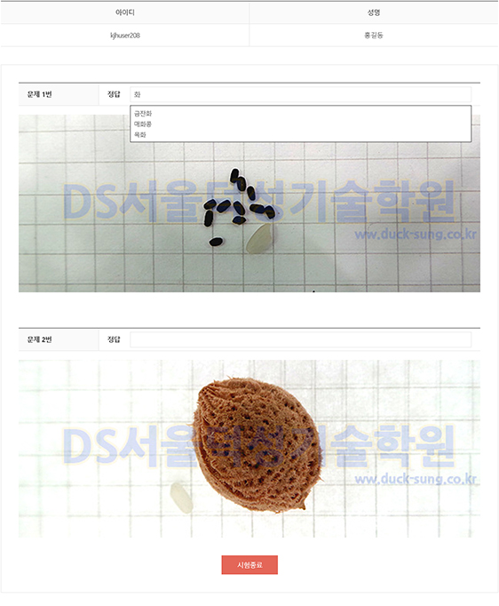

모의고사
덕성기술학원은 실전같은 모의고사를 제공하여, 수강생들이 완벽하게 대비할 수 있도록 합니다.
이용안내
본 문제풀이는 종자기사/산업기사 실기 시험 중 종자감별 실습에 도움이 될 수 있도록
준비한 서비스로서 학원 직강 수강생 및 동영상 수강생들께서 이용 가능합니다.

※ 각종 종자사진 20장을 무작위로 보여지며 해당 종자명을 기입해서 맞추는 방식으로 제작되어 있습니다.
※ 종자사진은 지속적으로 업데이트 하여 늘려나갈 예정입니다.
※ 종자사진은 지속적으로 업데이트 하여 늘려나갈 예정입니다.
종자감별 문제풀이 이용방법
- 종자감별 문제풀이를 시작하면 아래 첫번째 사진과 같은 화면이 새창으로 출력됩니다.
- 총 20문제가 출제 되며 아래 첫번째 사진을 참고하여 종자명을 정답란에 기입하시면 됩니다.
- 20문제를 모두 풀이 한 후에는 시험종료를 클릭하면 시험이 종료되고 점수를 확인 할 수 있습니다.
- 시험이 종료되면 아래 두번째 사진과 같이 풀이한 문제들에 대한 상세 결과를 확인할 수 있습니다.
- 종자감별 문제풀이를 활용하여 수시로 연습하면 시험장에서 감별 문제를 대비하는데에 도움이 됩니다.
- 열심히 학습하셔서 좋은결과 있으시기 바랍니다.
|  |
※ 본 문제풀이를 시험에 대한 절대적인 기준으로 삼지 마시고 참고용으로 이용하시기 바랍니다.